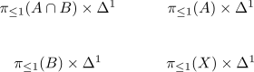

functor categories for groupoids commutes with 2-pullbacks up to equivalence for object-injective functor
Proposition
let $G$ be a groupoid, then the pushout of Seifert van Kampen about groupoids induces an adjoint equivalence
\begin{align*}
\mathrm{Fun}(\pi_{\leq 1}(X), \mathcal{G}) \cong \mathrm{Fun}(\pi_{\leq 1}(B), \mathcal{G}) \times^{2}_{\mathrm{Fun}(\pi_{\leq 1}(A \cap B), \mathcal{G})} \mathrm{Fun}(\pi_{\leq 1}(A), \mathcal{G})
\end{align*}
natural in $\mathcal{G}$
Proof
There exists an isomorphism of categories for the 1-pullback
\begin{align*}
\mathrm{Fun}(\pi_{\leq 1}(X), \mathcal{G}) \cong \mathrm{Fun}(\pi_{\leq 1}(B), \mathcal{G}) \times_{\mathrm{Fun}(\pi_{\leq 1}(A \cap B), \mathcal{G})} \mathrm{Fun}(\pi_{\leq 1}(A), \mathcal{G})
\end{align*}
objects
- a functor from from $\pi_{\leq 1}(X)$ is the same as a compatible functor from $\pi_{\leq 1}(A),\pi_{\leq 1}(B)$
morphism
Since $(-) \times \Delta^1$ is a left adjoint, the diagram

is still a pushout (see left adjoint preserves colimits)
On morphisms the iso of just expresses the universal property of this pushout
the strict pullback is equivalent with the 2-categorical pullback by 2.61